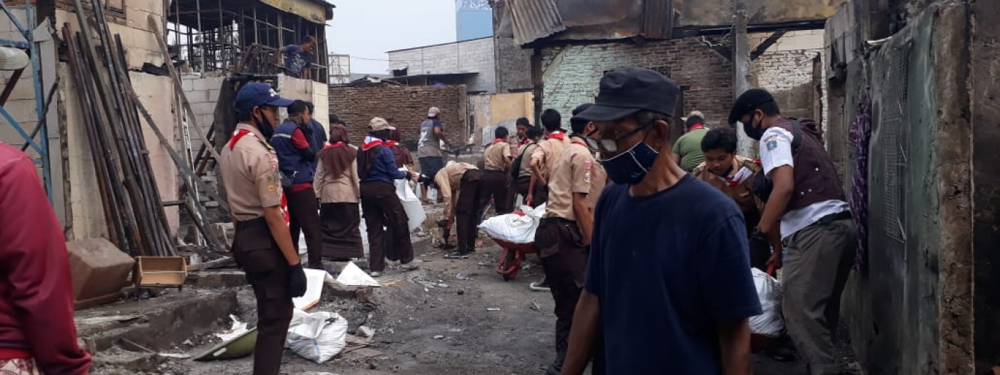
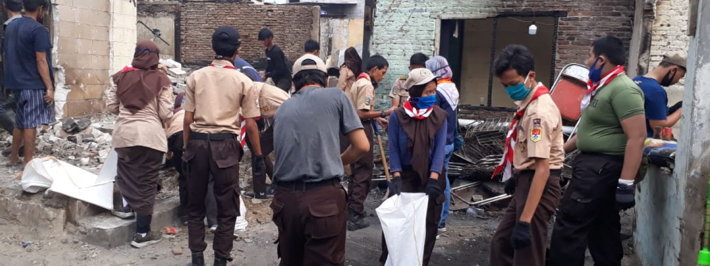

Siap Sedia
Ikut Serta Membangun Masyarakat
Ikut Serta Membangun Masyarakat
-
> 897.323.533.865 Jam
Pramuka Peduli Berbakti
-
> 32.533.421
Anggota Aktif
-
> 463.432 Jam
Aksi Pramuka Peduli Terlaksana
-
> Rp.932.323.533.971,00
Donasi Tunai Terselesaikan

Pramuka Peduli Kwartir Cabang Jakarta Selatan Turut Bekerja Bakti Pasca Kebakaran di Setiabudi